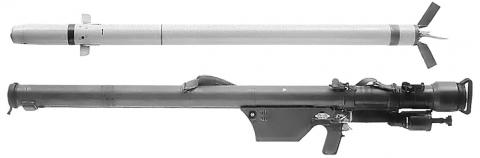
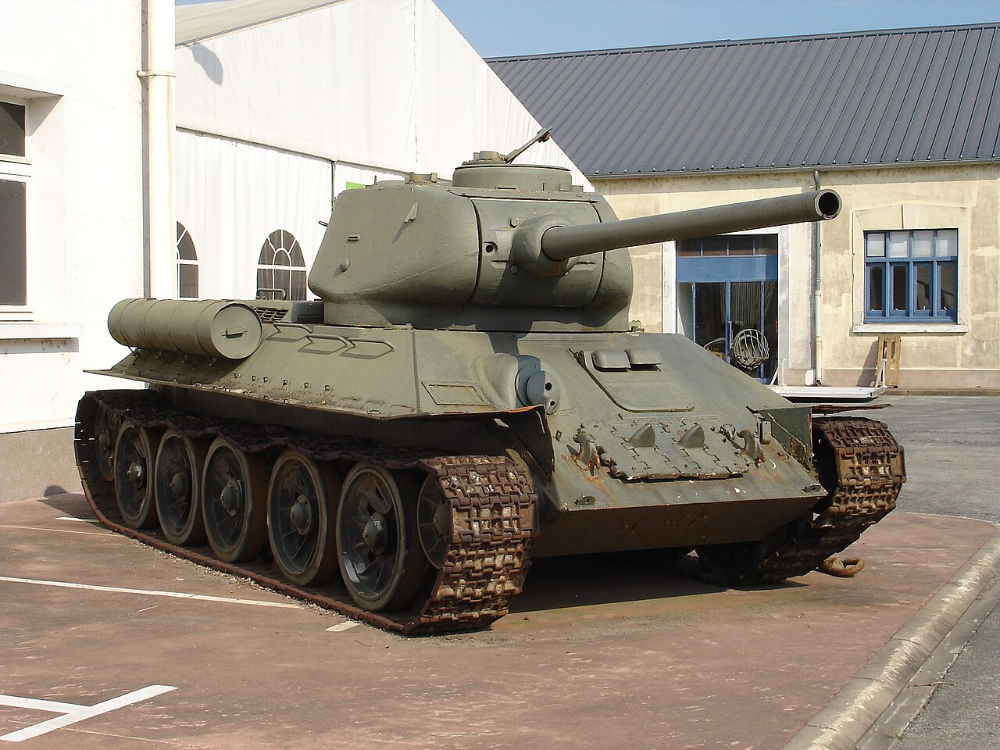

O Armamento da Luta de Libertação (1963–1974)
O apoio da União Soviética, Cuba e China foi decisivo. As armas que mudaram o rumo da guerra incluem: Míssil Terra-Ar Strela-2 (SAM-7), Espingarda de Assalto AK-47, Lança-Granadas RPG-2/RPG-7 e artilharia leve (morteiros e canhões sem recuo).
Arsenal Blindado e Pesado



Força Aérea e Marinha

Historicamente o país operou caças MiG e helicópteros Mi-8. Atualmente a força aérea é reduzida, com foco em transporte; a marinha baseia-se em lanchas de patrulha para fiscalização e combate ao narcotráfico.
O Problema das Armas Ligeiras
O excesso de armas ligeiras na população e entre militares após conflitos é um desafio de segurança persistente; recolhas e desarmamento continuam a ser prioridades de organizações internacionais.